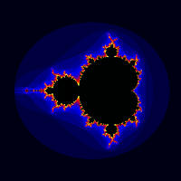

require 'narray'
require 'nimage'
def mandel(w,h)
zoom=3.5
z = ( NArray.scomplex(w,1).indgen!/w-0.65 )*zoom +
( NArray.scomplex(1,h).indgen!/h-0.5 )*(zoom*1.im)
c = z.dup
a = NArray.sint(h,w)
idx = NArray.int(h,w).indgen!
for i in 1..30
z = z**2+c
idx_t,idx_f = (z.abs>2).where2
a[idx[idx_t]] = i
break if idx_f.size==0
idx = idx[idx_f]
z = z[idx_f]
c = c[idx_f]
end
a
end
NImage.show mandel(400,400)
print "Hit return key..."
STDIN.getc